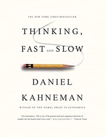

Thinking, Fast and Slow
Book·Daniel Kahneman, 2011·思考，快与慢

Covers heuristics, biases, intuition and deliberate thinking. Several priming studies it discusses later failed to replicate, so read it critically.
- Author
- Daniel Kahneman
- Year
- 2011
- Difficulty
- Intermediate
- Kind
- Overview
- Schools
- Heuristics and Biases
- Core theories
- Dual-Process Theory, Prospect Theory
Editions
- Chinese edition 《思考，快与慢》 [美] 丹尼尔·卡尼曼 · tr. 江生 / 于华 / 赵佳颖(审校) · 中信出版社 · 2025 Douban 8.2 (1150 ratings) Douban page ↗
- English edition Thinking, Fast and Slow Daniel Kahneman · Farrar, Straus and Giroux, first edition · 2011 Open Library ↗